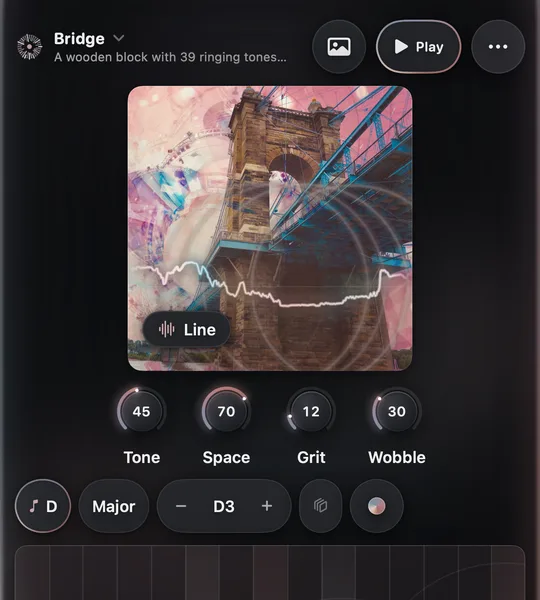
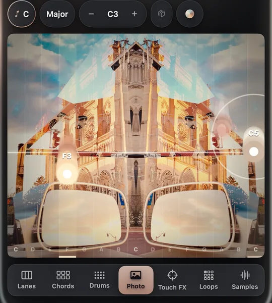
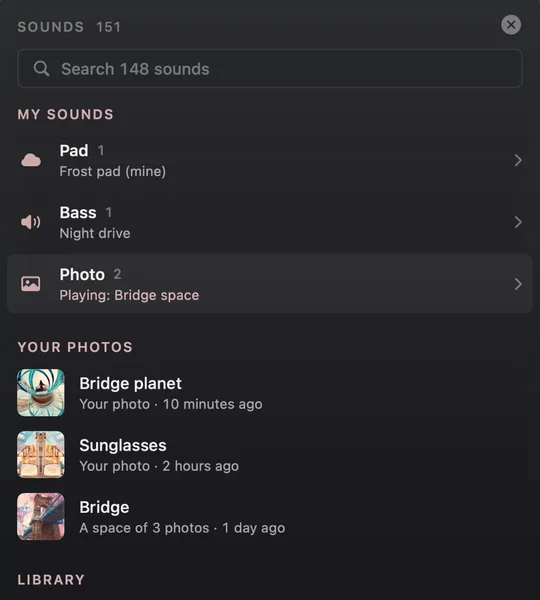
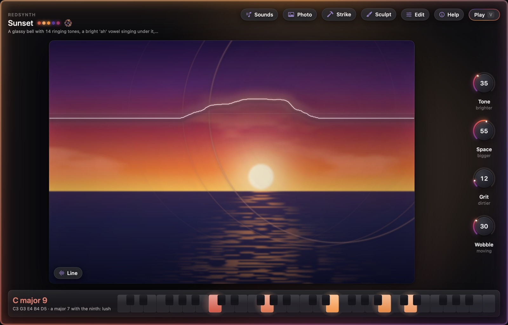

The RedSynth Pad guide
Start with one minute. Then try a recipe, or read a chapter when you want to know why.
Your first minute

Pick a photoTap Photo and choose any picture. Watch it come apart while you hear it, or tap to skip.iPhoneThe photo button is at the top.MacYou can also drag a photo onto the window.
Play the padTouch the pad anywhere. Then choose Photo mode: across is the note, and the photo is under your fingers.iPhoneThe modes are along the bottom.MacRest the pointer on the pad and play the trackpad.
Save it to My soundsTap Save, give it a name, and tap Save to My sounds. It's in Sounds next time, exactly as you heard it.iPhoneIt's in the … menu: Save in My sounds…MacOr press ⌘S.
Looking for one task? Help & How-To has 35 short how-tos, the FAQ and the fixes on one page.
What will you make?
A few things people can make today, each with its recipe.
The chapters
What you need
- An iPhone with iOS 18 or later, an iPad with iPadOS 18 or later, or a Mac with Apple silicon and macOS 15 or later. One purchase covers all three.
- A photo. Any photo. PNG, JPEG or HEIC.
- Optional: an Apple Pencil, a MIDI keyboard, headphones. Wired headphones or the built-in speakers respond faster than Bluetooth ones.
- Optional: GarageBand (free from Apple) or another music app that hosts Audio Units, if you want to record it into a song.
A longer first look

- Open RedSynth Pad. The pad is at the bottom, the instrument above it. Touch the pad anywhere: you hear a note and a bloom of colour starts where your finger landed. Mac Rest the pointer over the pad and touch the trackpad, or click with a mouse.
- Tap Photo at the top and choose a picture. On an iPhone it's the photo button beside Play. On a Mac you can also drag one onto the window.
- Watch the breakdown. For twenty seconds the photo is taken apart and you hear it as it forms. Tap to skip it.
- Play. A new sound, named after your photo, is selected. The app keeps your recent photo sounds under Your photos in Sounds; Save keeps one for good, by name, under My sounds. The window's light is now your photo's five main colours.
- Turn a knob. Hold a note and turn Tone, Space, Grit or Wobble.
- Change the pad. The mode bar switches it between Lanes, Chords, Drums, Photo, Touch FX, Loops and Samples. It's just above the pad, or along the bottom on an iPhone. Try Photo: now you're playing the picture itself. Which mode do I use?
The screen, top to bottom
| Where | What it is |
|---|---|
| Top left | The sound's name, five dots (your photo's colours) and one line saying what the photo became. |
| Sounds | Your photo sounds first, then the 144 built-in sounds in eight groups, with a search. |
| Save | Keeps the sound exactly as you hear it in My sounds, and sends it to a friend. See Save and send. |
| Photo | Choose a photo. Once one is in, this becomes a menu: a new photo, add a second, add a third, remove, and a filter for each. |
| Scan, Strike or Space | The How the photo plays menu. Under Strike it also chooses what the photo strikes as: a ringing object, a plucked string, a ladder bass or a clean lead. Appears once a photo is in. |
| Sculpt (the brush) | Opens the photo, or the space, to change it by hand. Appears once a photo is in. |
| Pad | Shows the pad, or swaps it for an on-screen keyboard. |
| Edit | Every control of the sound. A window of its own on a Mac (⌘E), a panel beside the instrument on an iPad. |
| Help | Writes one line under every control saying what it does. Tap again to hide them. |
| Guide | The five-step photo guide. |
| Play | Play view: the photo, or the space, fills the whole window. |
| The middle | Your photo with the scan line. Drag on the photo to move the line. The Line button in its corner makes the line move by itself. |
| The four knobs | Tone, Space, Grit, Wobble. |
| The pad | Where you play. Its mode bar and key are just above it. |
| The bottom strip | The keys you're holding, lit in their colours, and the name of the chord. |
On a narrow window, or an iPad held upright, the buttons shrink to icons and may wrap onto a second row. They're the same buttons.
iPhone, iPad and Mac: what's different
| iPhone | iPad | Mac | |
|---|---|---|---|
| The pad | The screen: under the photo when upright, full height on its side | The screen, up to ten fingers | The trackpad, or a mouse as one finger |
| How hard | Size of the touch | Size of the touch; Pencil force | Where the finger lands; Force Touch |
| Choosing a photo | The Photos picker, one at a time | The Photos picker or Files, one at a time | A file window or drag and drop, several at once |
| Edit, every control | The … menu › Edit the sound: a sheet under the pad, which still plays; drag it up for full height | A panel beside the instrument; the pad still plays | A window of its own: Sound › Edit Sound, ⌘E |
| Sculpt's brush | A finger; the brush's settings rise from the bottom | A finger or Apple Pencil; the Pencil's pressure is the strength | The trackpad or a mouse; scroll sizes the brush |
| Help on a control | Hold a finger still on it | Hold a finger still on it | Rest the pointer on it |
| About | The … menu, top right | The small "i", bottom right | The app menu |
| Keyboard shortcuts | With a keyboard attached | With a keyboard attached | Always (the list) |
Where your things are kept
Everything stays on your device, in the app's own storage: your photo sounds (the newest 24), loops and samples. Nothing is uploaded, and there's no account. When you use RedSynth Pad as a plugin, the photo is saved inside that song's project, so the song opens the way you left it. Deleting the app deletes what's stored in it. See Privacy.